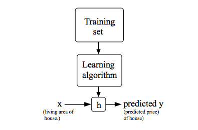
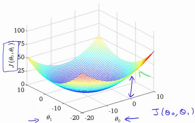

在给定训练集的情况下，学习函数h：X→Y，使得h（x）是y的相应值的“好”预测器。由于历史原因，这个函数h被称为假设。

通过输入住房面积 x，通过学习好的函数，输出房子的估价。
代价函数
代价函数是线性回归中的一个应用，在线性回归中，要解决的一个问题就是最小化问题。
假设在一元线性回归中，在一个训练集中，我们需要找到一条直线能和该训练集中的点最接近。假设直线方程为
\[h_{\theta}(x) = \theta_{0} + \theta_{1}x\]
如何选择 \(\theta_{0}\)、\(\theta_{1}\)，使得 \(h_{\theta}(x)\) 更接近于训练集 (x,y) ？
上述问题可以转换为求
\[ \rm{CostFunction} = \rm{F}({\theta_{0}},{\theta_{1}}) = \frac{1}{2m}\sum_{i = 1}^{m} (h_{\theta}(x^{(i)})-y^{(i)})^2 \]
求最小值\[\min_{{\theta_{0}} {\theta_{1}}} \rm{F}({\theta_{0},{\theta_{1}})} \]
代价函数的直观理解I
令\(\theta_0\)=0时，求出不同\(\theta_1\)下代价函数的值

代价函数的直观理解II

梯度下降
梯度下降是一个用来求函数最小值的算法，我们将使用梯度下降算法来求出代价函数\(J(\theta_0,\theta_1)\)的最小值。
have some function : \(J(\theta_0,\theta_1)\)
want : \(\min_{{\theta_{0}} {\theta_{1}}} J(\theta_0,\theta_1)\)
outline :
- 初始化 \({\theta_{0}}\) 和 \({\theta_{1}}\) , \({\theta_{0}}\) = 0 , \({\theta_{1}}\) = 0
- 不断的改变 \({\theta_{0}}\) 和 \({\theta_{1}}\) 值，不断减少 \(F({\theta_{0}},{\theta_{1}})\) 直至达到最小值（或者局部最小）。

想象成下山，如何下山的速度最快？这里涉及到了下山的速度，即步长。
repeat until convergence\[ \{\theta_j:=\theta_j-{\alpha}\frac{\partial }{\partial {\theta_{0}}}J(\theta_0,\theta_1) (for \quad j=o\quad and\quad j=1) \}\]
:=赋值- \(\alpha\) 被称作为学习速率，\(\alpha\)值大，下山的步伐大
- 更新等式，需要同时更新\(\theta_0,\theta_1\)
更新实现方法：
\[ {\begin{align*}\rm{temp}0&:= {\theta_{0}}\alpha *\frac{\partial }{\partial {\theta_{0}\rm{F}({\theta_{0}},{\theta_{1}}) \\\rm{temp}1 &:= {\theta_{1}} \alpha *\frac{\partial }{\partial {\theta_{1}\rm{F}({\theta_{0}},{\theta_{1}}) \\{\theta_{0}} &:= \rm{temp}0 \\{\theta_{1}} &:= \rm{temp}1 \\\end{align*} }\]
直到收敛。注意 \({\theta_{0}}\) 和 \({\theta_{1}}\) 值要同时更新，切记不要求一次导更新一次！

如果 \(\alpha\) 被设置的很小，需要很多次循环才能到底最低点。
如果 \(\alpha\) 被设置的很大，来来回回可能就会离最低点越来越远，会导致无法收敛，甚至发散。
当快要到最低点的时候，梯度下降会越来越慢，因为 \( \frac{\partial }{\partial {\theta}}\) 越来越小。
梯度下降的直观理解
\[\theta_j:=\theta_j-\alpha{\frac{\partial}{\partial{\theta_j}}J(\theta_0,\theta_1)}\]
简化模型：
- \(min_{\theta_0} J(\theta_1)\)
- \(\theta_1 \in \R\)

- 导数求切线斜率
- 此时\(\theta_1\)减去一个大于0的斜率，\(\theta_1\)左移
- 假设你将初始化\(\theta_1\)在局部最低点已经在一个局部的最优处或局部最低点。结果是局部最优点的导数将等于零,\(\theta_1\)不变
\(\alpha\)
- 太小速度会很慢
- 太大会超过最小值

例：
::越接近最小值，下降的斜率越低，下降速度越慢::